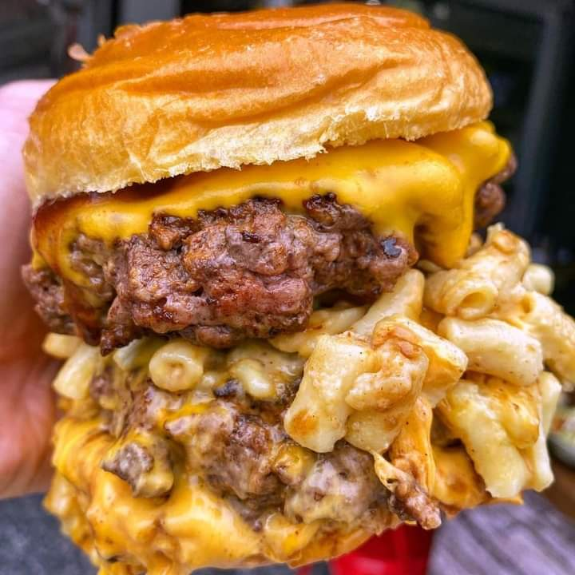
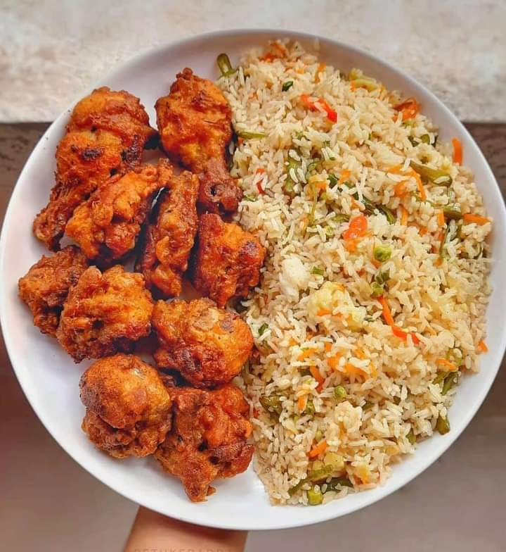
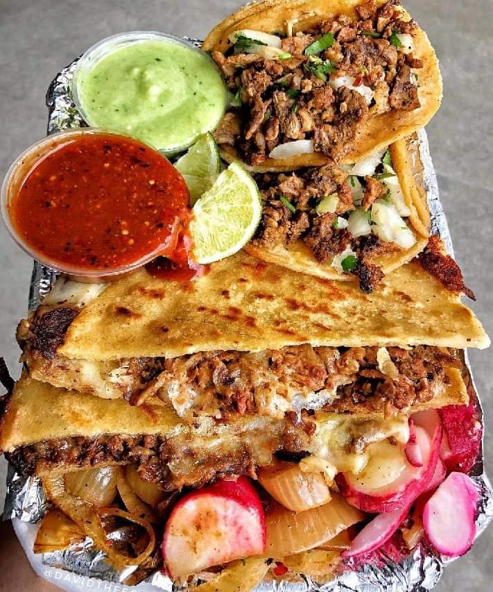
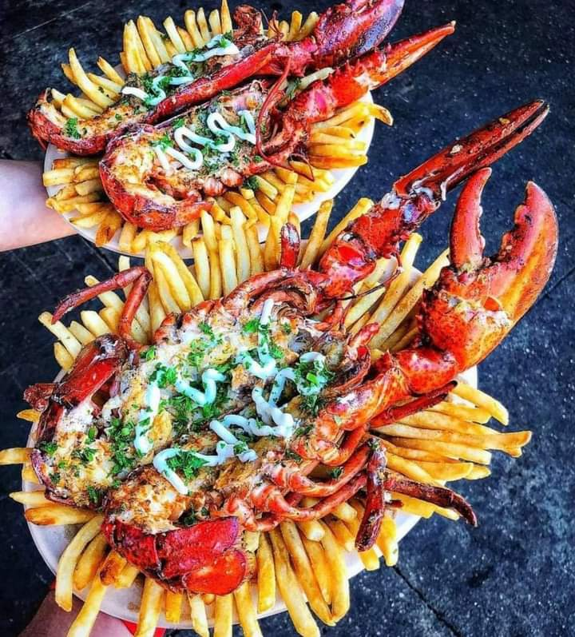

Best recipes in Sri lanka.
Best recipes in Sri lanka.
McDonald's predominantly sells hamburgers, various types of chicken, chicken sandwiches, French fries, soft drinks, breakfast items, and desserts. In most markets, McDonald's offers salads and vegetarian items, wraps and other localized fare. On a seasonal basis, McDonald's offers the McRib sandwich. Some speculate the seasonality of the McRib adds to its appeal.[77] Products are offered as either "dine-in" (where the customer opts to eat in the restaurant) or "take-out" (where the customer opts to take the food off the premises). "Dine-in" meals are provided on a plastic tray with a paper insert on the floor of the tray. "Take-out" meals are usually delivered with the contents enclosed in a distinctive McDonald's-branded brown paper bag. In both cases, the individual items are wrapped or boxed as appropriate.
   